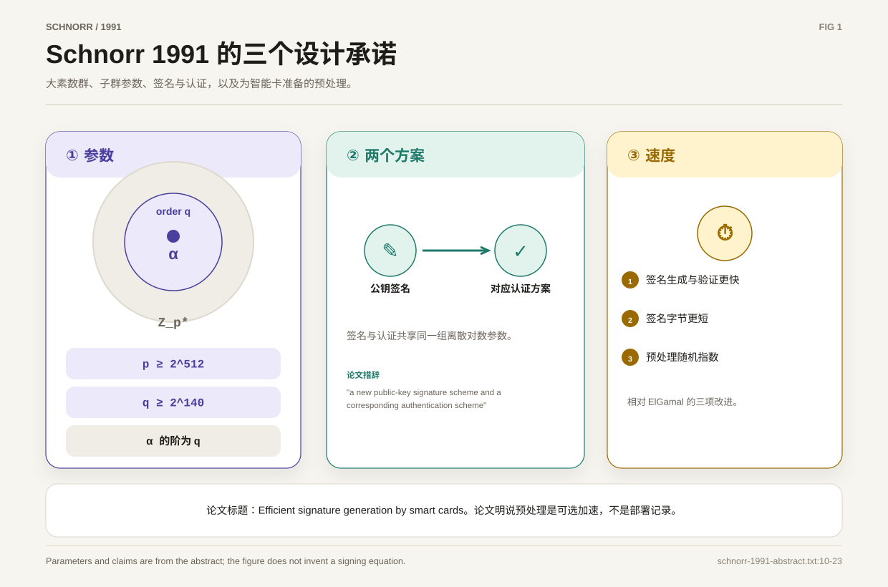
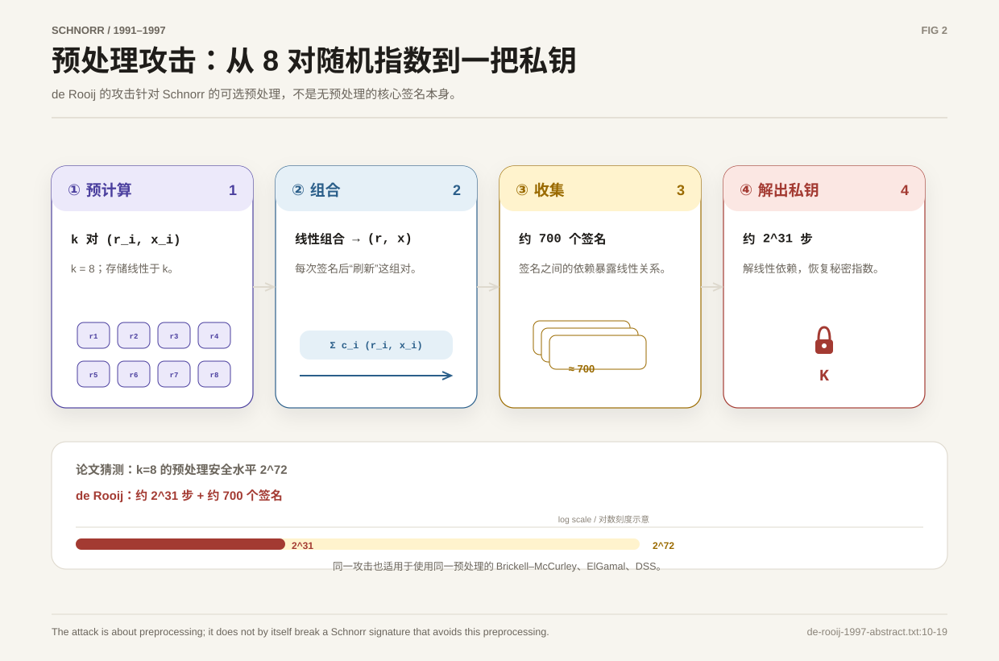

原理与机制
算法：Schnorr 签名（Schnorr Signature）。论文提出一个公钥签名方案和一个对应的认证方案，二者都基于 Z_p* 的一个子群中的离散对数。参数不是任意素数群：p 要足够大，例如「p >= 2^512」；作为离散对数底的 α 的阶要是一个足够大的素数 q，例如「q >= 2^140」。原文写：「We present a new public-key signature scheme and a corresponding authentication scheme that are based on discrete logarithms in a subgroup of units in Z_p* where p is a sufficiently large prime, e.g., p >= 2^512.」，以及「A key idea is to use for the base of the discrete logarithm an integer alpha in Z_p* such that the order of alpha is a sufficiently large prime q, e.g., q >= 2^140.」

为什么重要
相对 ElGamal，论文声称在签名生成与验证速度、以及签名字节长度上同时改进。原文写：「In this way we improve the ElGamal signature scheme in the speed of the procedures for the generation and the verification of signatures and also in the bit length of signatures.」。另一个设计重点是预处理：签名者可以预先计算与消息无关的随机指数幂，原文写：「We present an efficient algorithm that preprocesses the exponentiation of a random residue modulo p.」。这些是论文的设计声明，不是独立基准测试；该条目不把“更快/更短”扩写成具体倍数。
应用与实例
论文标题是「Efficient signature generation by smart cards」，摘要给出一个签名方案、一个认证方案，以及预处理随机指数幂的算法；这三点共同指向智能卡/受限签名者场景。原文没有报告智能卡产品、部署数量、侧信道测试或具体实现。该条目因此只把“智能卡”写成论文的目标场景，不把它写成已经商用的智能卡方案。
边界与攻击面
de Rooij 1997 的攻击针对 Schnorr 的可选预处理，而不是无预处理的核心签名。论文写：「In this paper an attack on these preprocessing algorithms is presented.」攻击恢复秘密密钥：「For k=8, this amounts to about 2^31 steps and 700 signatures.」，并适用于「Brickell-McCurley, ElGamal, and DSS signatures as well, if the same preprocessing algorithm is used」。同一摘要还记，论文对 k=8 预处理的安全猜测是 2^72。边界是：这不能写成“Schnorr 签名被无条件攻破”；它说明预处理参数/使用方式会把安全性拉低，而且攻击需要收集签名或识别记录。

历史与背景
文章刊于 Journal of Cryptology 4(3)，1991 年 1 月，161–174 页；页面记「Received: 17 August 1989」与「Revised: 15 March 1991」。同一页补充信息还记「European patent application 89103290.6 from February 24, 1989.」和「U.S.patent number 4995082 of February 19, 1991.」。该条目把文本断到 1991 年期刊文章；1989 年专利申请与 1991 年美国专利是同一页上的补充记录，不是期刊发表年，也不自动等于论文的技术内容。
逐步示例与核验
形式模型与复算步骤
[s=k^{-1}\big(H(m)+r d\big)\bmod n]
Schnorr 签名的公开参数、密钥/随机数与消息；变量说明：k 一次性随机数，r 为承诺点横坐标，d 私钥，n 子群阶。1.选择随机 k，计算 R=kG 与 r。2.计算 s=k^{-1}(H(m)+rd) mod n。3.输出 (r,s)，验证者检查签名方程。边界：公式只覆盖已登记的参数与假设；参数取值、标准版本和实现细节仍以来源为准。
参考出处
- Wikipedia search entry for Schnorr 签名. https://zh.wikipedia.org/w/index.php?search=Schnorr%20%E7%AD%BE%E5%90%8D
- Handbook of Applied Cryptography (Menezes, van Oorschot, Vanstone). https://www.cacr.math.uwaterloo.ca/hac/